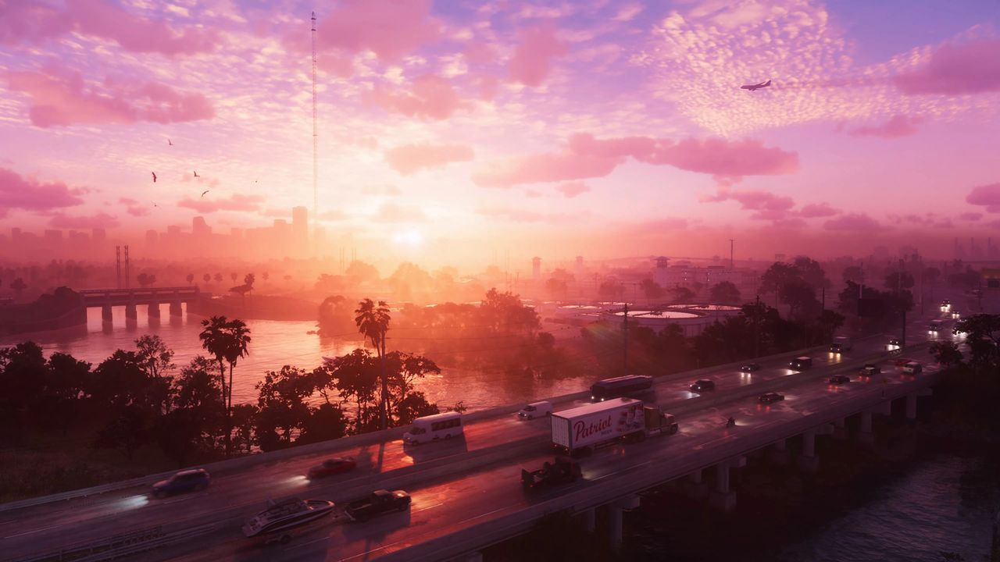

© Rockstar Games / Take-Two Interactive — image officielle de GTA VI (bande-annonce 1), via GTA Wiki.
Ville ou quartier
Hamlet
Fiabilité Hamlet a d'abord été repérée dans les fuites de septembre 2022 (non officiel) avant ses apparitions dans les bandes-annonces 1 et 2.
Hamlet est une ville du comté de Vice-Dale, près de la pointe sud-est du continent de Leonida, au sud-ouest de Vice City.
Comment on la connaît
- Fuites de septembre 2022 (non officiel) : son nom apparaît trois fois dans un menu de débogage. Un clip montre aussi Lucia, debout dans la benne d'un pick-up, qui vise des policiers avec un fusil d'assaut sur la Leonida State Route 61.
- Bande-annonce 1 : sa prison et sa centrale électrique sont visibles au loin dans le plan d'ouverture. Elle est citée plus loin dans un live d'un utilisateur nommé LuchaLibreFan, avec une femme armée d'un marteau devant un immeuble et la légende « Neighborhood watch don't play around in Hamlet » (0:58).
- Bande-annonce 2 : un panneau de la Keys Causeway, à Key Lento, indique Hamlet dans le plan d'ouverture, ce qui confirme sa position.
Lieux d'intérêt
- Le Beacon Theater
- Le château d'eau de Hamlet
- La Leonida Penitentiary
- Une station-service LTD
- Rattlers
- Te Invito
- Treasured Trash
- Un complexe d'appartements
- Une centrale électrique
- Un magasin Vinylism
- Le Boone Speedway
Inspiration réelle
La ville s'inspire de Homestead (Floride) : « hamlet » et « homestead » sont deux mots d'origine anglo-saxonne qui désignent un établissement rural. Sa rue principale, vue dans les fuites de 2022, reprend directement l'artère qui traverse le cœur de Homestead.
Sources : GTA Wiki, Rockstar Games (galerie média)